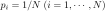
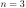

Entropy is a measurement of the uncertainty of the outcome of
a random event, which also measures the amount of information
obtained in terms of the reduction of uncertainty (due to certain
communication or xperiment). If the uncertainty is reduced to
zero by a communication, then the amount of information obtained
is exactly the same as the uncertainty before the communication.
Consider a random event represented by a random variable  with
with
 possible outcomes
possible outcomes
 and the corresponding
probabilities
satisfying
. For example,
letters in the English alphabet, with different probabilities
to be used (e.g.,
).
and the corresponding
probabilities
satisfying
. For example,
letters in the English alphabet, with different probabilities
to be used (e.g.,
).
We desire to binary encode the outcomes so that each outcome
 is represented by a sequence of 0's and 1's. To minimizes the
total number of bits needed to encode the variable , we assign
fewer bits to encode a more probable outcome (with greater ).
Specifically, we encode with by
bits. The expectation (average) of the total number of bits needed is
is represented by a sequence of 0's and 1's. To minimizes the
total number of bits needed to encode the variable , we assign
fewer bits to encode a more probable outcome (with greater ).
Specifically, we encode with by
bits. The expectation (average) of the total number of bits needed is
This is the entropy of the random variable , representing
the minimum number of bits needed to optimally binary encode .
The entropy can also be interpreted as the amount of uncertainty in
, or the amount of information gained once the value of is
known and the uncertainty is reduce from  to zero.
to zero.
We can show that a uniform distribution of equalily likely
outcomes with
 has the maximum entropy.
This is a constrained maximization problem which can be solved by
Lagrange multiplier method:
| |
|
|
|
| |
 |
|
(140) |
Solving this we get
which must satisfy
Solving for  we get
Substituting back into
we get
Substituting back into  we get
The corresponding maximum entropy can be obtained as
In this case, each outcome is encoded by
we get
The corresponding maximum entropy can be obtained as
In this case, each outcome is encoded by
 |
(146) |
bits, and the total number of bits needed to encode this random event
is
If
,
,  bits are needed to encode the
 possible outcomes.
possible outcomes.
Also  outcomes with unequal probabilities:
outcomes with unequal probabilities:
- If and
 , we have the minimum uncertainty zero
(
), i.e., 0 bit is needed to encode a sure
event:
, we have the minimum uncertainty zero
(
), i.e., 0 bit is needed to encode a sure
event:
- If , , the uncertainty is:
- If , , the uncertainty is:
- If , , the uncertainty is:
 |
(151) |
- If , , the uncertainty is:
 |
(152) |
- If
, we have the maximum uncertainty
, i.e., 1 bit (0 or 1) is needed to encode the event:
For a continuous random variable with probability density
function (pdf)  , the differential or
continuous entropy is
, the differential or
continuous entropy is
The perplexity of a discrete probability distribution
 is simply defined as
is simply defined as  .
.
We are interested in the pdf that maximizes the entropy
under various conditions:
The uncertainty of a distribution can be measured by both
its variance
and its entropy
 . However, they are also different
in that
. However, they are also different
in that  represents the spread of while
captures the shape of . In multimodal distribution (with
two or more modes), is a better measurement as it increases
due to the multimodes while is not sensitive to them.
represents the spread of while
captures the shape of . In multimodal distribution (with
two or more modes), is a better measurement as it increases
due to the multimodes while is not sensitive to them.
In data analysis and modeling, if no additional knowledge is
available regarding the data of interest other than their mean and
variance (or covariance for multivariate data), a pdf with maximum
entropy is often used as a preferred probabilistic model for the
data, as such a model will allow maximum flexibility and impose
the minimum amount of unsupported constraint and thereby causing
minimum bias error.